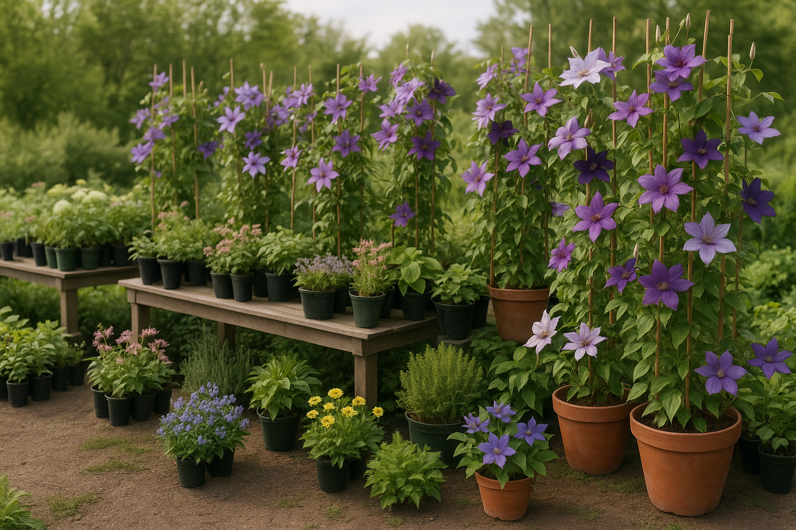
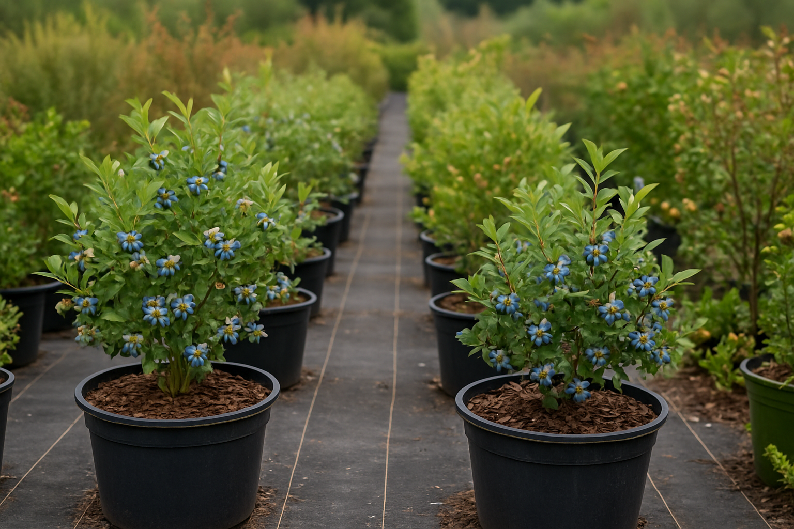

Reserve spring plants before the good ones disappear.
Halifax Perennials sells roses, peonies, shrubs, clematis, blueberries, and more through a live online catalogue, then tells you when your plants are actually ready for pickup.
The current site has the inventory and the facts. This concept gives them a calmer front door.
Pickup runs from 28 Withrod Dr. Open hours shift week to week, usually across 2 to 3 evenings, and Saturdays stay off the table.
Spring orders can be claimed online, then collected once stock arrives in late April and early May.
Facebook notes say about 97% of the plants on the site are grown in Canada. That's a real differentiator and it barely shows up in the current experience.
Private-home pickup point, with open hours posted on Facebook once the spring season gets moving.
Call, email, or message through Facebook if the listed pickup windows miss your week.
The live catalogue spans ornamental staples and edible plants instead of a tiny seasonal assortment.
The social footprint is stronger than the site suggests, with regular updates and active spring inventory posts.
A nursery page should calm you down, not make you decode it.
The opportunity here isn't a new brand. It's a cleaner frame around what already exists: a big catalogue, specific pickup guidance, and a customer base that already pays attention.
"It’s a from-home hobby, so usually there are 2-3 evenings a week available for pickups."
That's the kind of detail worth leaning into. It's human, practical, and honest. A good rescue build makes that feel intentional instead of buried.
The site metadata already says it clearly: this isn't just a neighbourhood pickup list. It's a wider plant catalogue with local pickup as the practical finish.
There is enough attention here to justify a page that feels deliberate, current, and easier to trust at a glance.
Potted plants land from roughly 18 to 20 suppliers between late April and May 6 to 10, then pickup emails follow. That sequence matters, and the site should explain it fast.
The inventory is the pitch.
When a plant business already has the depth, the page doesn't need a big story section. It needs appetite, clarity, and a clean path to the catalogue.


Built around the way plant buying actually happens.
People don't need a local nursery page to sound poetic. They need to know what kinds of plants are here, when pickup opens, and where to look for the freshest updates.
Those category groups are right on the live site. A calmer homepage can turn them into clear entry points instead of a giant filter wall.
Pickup hours, sale notes, and newly added plants already flow through Facebook. The redesign should treat that as part of the product, not an afterthought.
A nursery with wholesale mention, national shipping, and an active social audience deserves a page that feels calmer, clearer, and more trustworthy than the current one.
If I were rebuilding this live, this is the part I'd make impossible to miss.
Address, current hours, phone number, and the reserve-now workflow should all sit within one screen. That's the job.
Private-home pickup point. Open hours are posted on Facebook during the season, and no appointment is needed during those listed windows.
If the posted times don't fit, the official contact page explicitly says customers can request a different pickup day or time.
That detail belongs near the call and catalogue action so nobody places an order with the wrong expectation.
Recommended front-door actions
Lead with the catalogue. Put current pickup hours one tap away. Keep the phone number visible. Make the business feel as organized as the inventory already is.